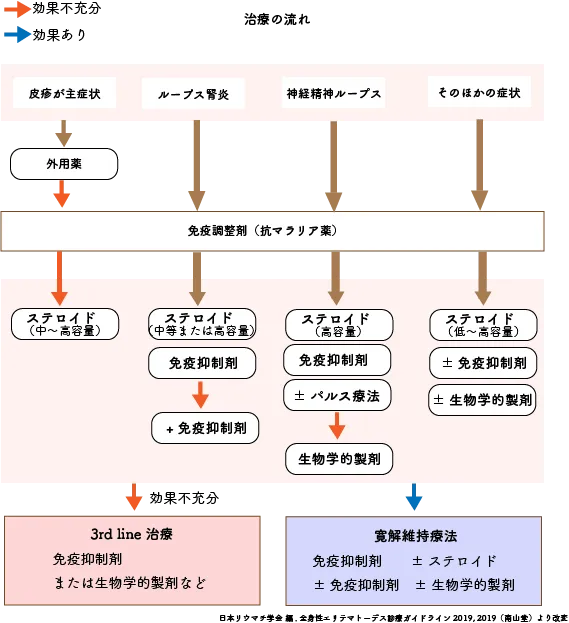

SLEの治療
かつては「生存率3年」と言われた難病も、ステロイドや新薬の登場で10年生存率90%超に。患者さん一人ひとりに合わせた治療で、社会的寛解を目指せる時代になりました。治療は“長く上手に”。自分に合う形を見つけましょう。
SLEの治療の背景
SLEは国から難病指定されています。根本的な治療法は現代の医療ではありません。重症の場合は命に関わることがあります。かつては亡くなる人も多く、十数年前までは「生存率３年」と言われるほど治療が難しい病気でした。しかし、グルココルチコイドいわゆるステロイドが使われるようになってから炎症や免疫反応を強力に抑える働きがあり、治療が大きく進みました。最近では免疫抑制薬や免疫調整薬、生物学的製剤などの効果の高い薬が次々と登場して10年生存率が90%以上超えるようになり社会的寛解が治療の目標となっています。グルココルチコイドを使う量は、今ではぐっと少なく抑えられるようになりました。場合によっては、グルココルチコイドを使わずに治療できるケースも増えています。治療に使える薬の選択肢が増えたことで、患者さんごとにより効果が高く、副作用の少ない治療法を選びやすくなってきています。
治療の方法
病態、臓器障害の種類や程度、合併症など全身の状態を診て治療方針が決められます。個々の症状により治療方法が異なります。

作成日・更新日

おすすめのページ

作成日・更新日
おすすめのページ

いま、気になること
気になる言葉を押すと関連ページに飛びます